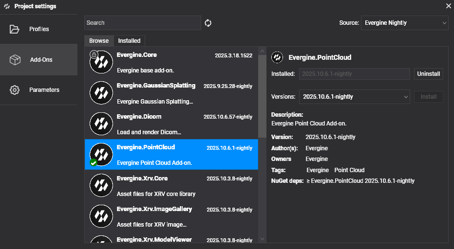

Getting started with Point Cloud

This page adds the Point Cloud add-on to a project and loads a cloud into a scene. The add-on plugs into three moments of the application lifecycle: when the application is created, when the scene registers its managers, and when the scene is created. After that, one call loads a file.
Project setup
1. Create a project
Create a project with Evergine Launcher and keep the Windows profile.
Note
The add-on does not support Web platforms.
2. Install the add-on
In Evergine Studio, open the Add-ons Manager and install Evergine.PointCloud.
Note
The add-on references NuGet packages. To use nightly builds, add the Evergine nightly feed to your nuget.config:
<?xml version="1.0" encoding="utf-8"?>
<configuration>
<packageSources>
<add key="nuget.org" value="https://api.nuget.org/v3/index.json" />
<add key="Evergine Nightly" value="https://pkgs.dev.azure.com/plainconcepts/Evergine.Nightly/_packaging/Evergine.NightlyBuilds/nuget/v3/index.json" />
</packageSources>
</configuration>
3. Register the services in the application
Call PointCloudRuntime.OnAppConstruction at the end of your Application constructor. It registers the importers and the loader service in the container.
using Evergine.Common.IO;
using Evergine.Framework;
using Evergine.Framework.Services;
using Evergine.Framework.Threading;
using Evergine.PointCloud;
public partial class MyApplication : Application
{
public MyApplication()
{
this.Container.Register<Settings>();
this.Container.Register<Clock>();
this.Container.Register<TimerFactory>();
this.Container.Register<Random>();
this.Container.Register<ErrorHandler>();
this.Container.Register<ScreenContextManager>();
this.Container.Register<GraphicsPresenter>();
this.Container.Register<AssetsDirectory>();
this.Container.Register<AssetsService>();
this.Container.Register<ForegroundTaskSchedulerService>();
this.Container.Register<WorkActionScheduler>();
// Registers the E57, EPC, LAS and PCD importers and the loader service.
PointCloudRuntime.OnAppConstruction(this.Container);
}
}
4. Set up the scene
In your scene, register the point data manager in RegisterManagers, and initialize the runtime in CreateScene. OnSceneInitialization replaces the default render path of the scene with ProgressiveRenderPath.
using Evergine.Framework;
using Evergine.PointCloud;
public class MyScene : Scene
{
public override void RegisterManagers()
{
base.RegisterManagers();
// Adds PointDataManager, which owns the GPU buffers of every cloud.
PointCloudRuntime.RegisterManagers(this.Managers);
}
protected override void CreateScene()
{
PointCloudRuntime.OnSceneInitialization(this.Managers);
}
protected override async void Start()
{
base.Start();
await PointCloudRuntime.LoadCloudAsync(@"C:\Data\scans\building.e57");
}
}
Load a point cloud
Call PointCloudRuntime.LoadCloudAsync with the path of a .e57, .las, .laz, .pcd, or .epc file once the scene is initialized. It returns null if you call it before OnSceneInitialization. The loader then:
- Picks the importer from the file extension.
- Reads the file metadata and streams the points in chunks, in a background task.
- Instantiates the point cloud prefab, an entity tagged
PointCloudnamed after the file, with aPointCloudDrawablecomponent. - Allocates GPU buffers for the cloud.
- Uploads each chunk and distributes its points over the buffers, so the image shows the whole cloud early and fills in as loading continues.
You do not create the entity yourself. Each call to LoadCloudAsync adds a new entity, so you can load several clouds; the buffers grow automatically. To remove a cloud, remove its entity from the entity manager, and the add-on compacts the GPU memory.
Note
The task returned by LoadCloudAsync completes when loading has started, not when every point is on the GPU. Use PointCloudDrawable.IsPointCloudLoaded to know when a cloud is complete.
PointCloudDrawable reports the loading progress:
| Member | Description |
|---|---|
NumPoints |
Number of points in the file. |
LoadedPoints |
Number of points uploaded so far. |
IsPointCloudLoaded |
true when every point has been uploaded. |
BoundingBox |
Bounds of the points loaded so far. Use it to frame the camera. |
Tune the rendering
PointDataManager (namespace Evergine.PointCloud.ProgressiveRendering) controls how the points are drawn. Find it with this.Managers.FindManager<PointDataManager>() and change its fields at any time.
| Field | Default | Description |
|---|---|---|
PointSize |
1 |
Size of each point, in pixels. |
MaxPointsPerFrame |
10000000 |
Maximum number of points projected per frame. Lower it on slower GPUs; the image then takes more frames to fill in. |
using Evergine.PointCloud.ProgressiveRendering;
var pointData = this.Managers.FindManager<PointDataManager>();
pointData.PointSize = 2;
pointData.MaxPointsPerFrame = 2 * 1000 * 1000;